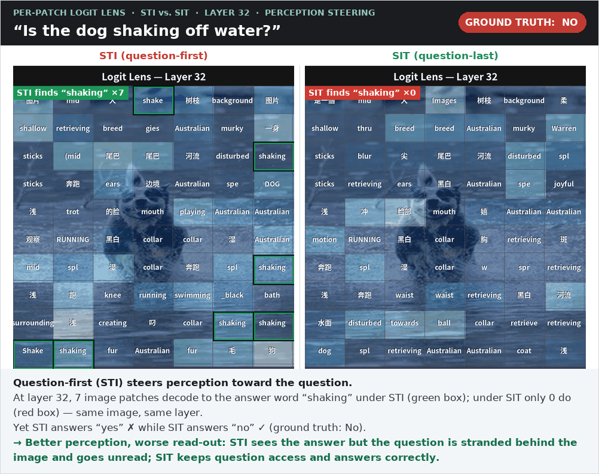
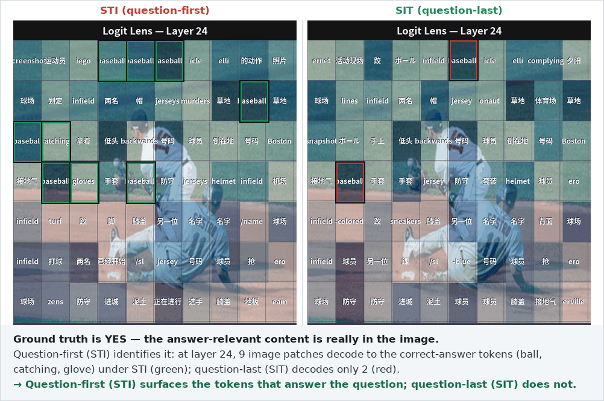
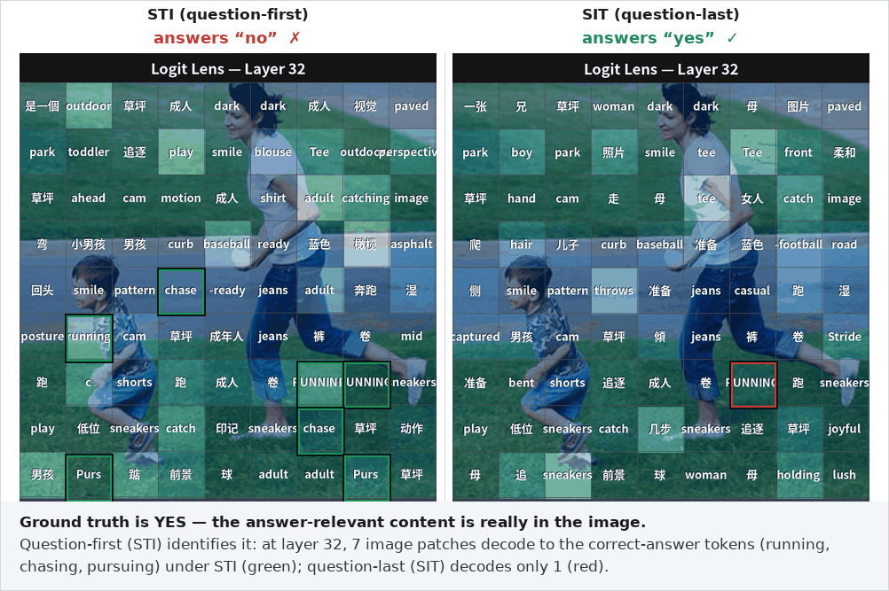
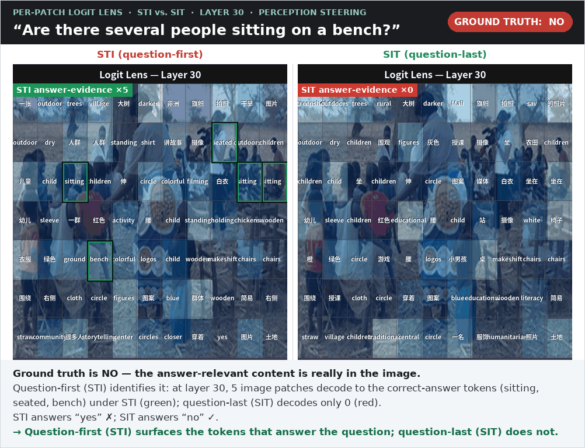
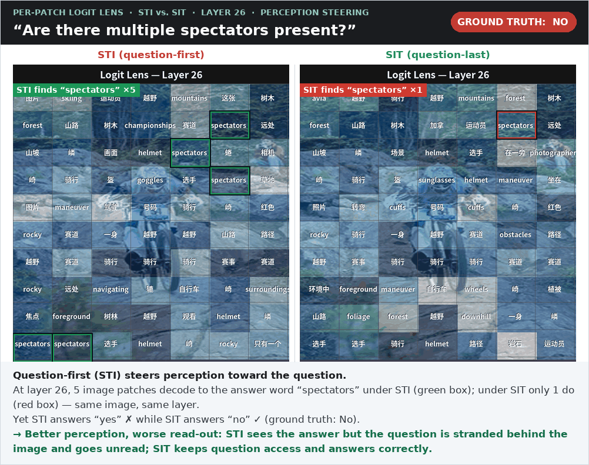
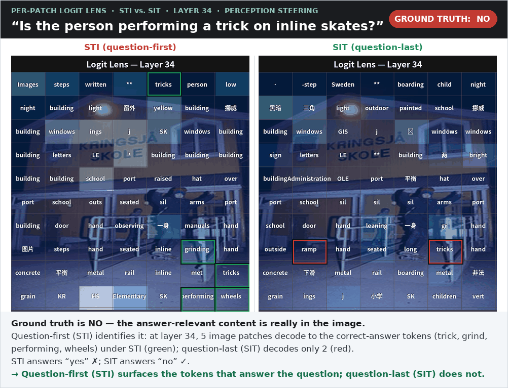
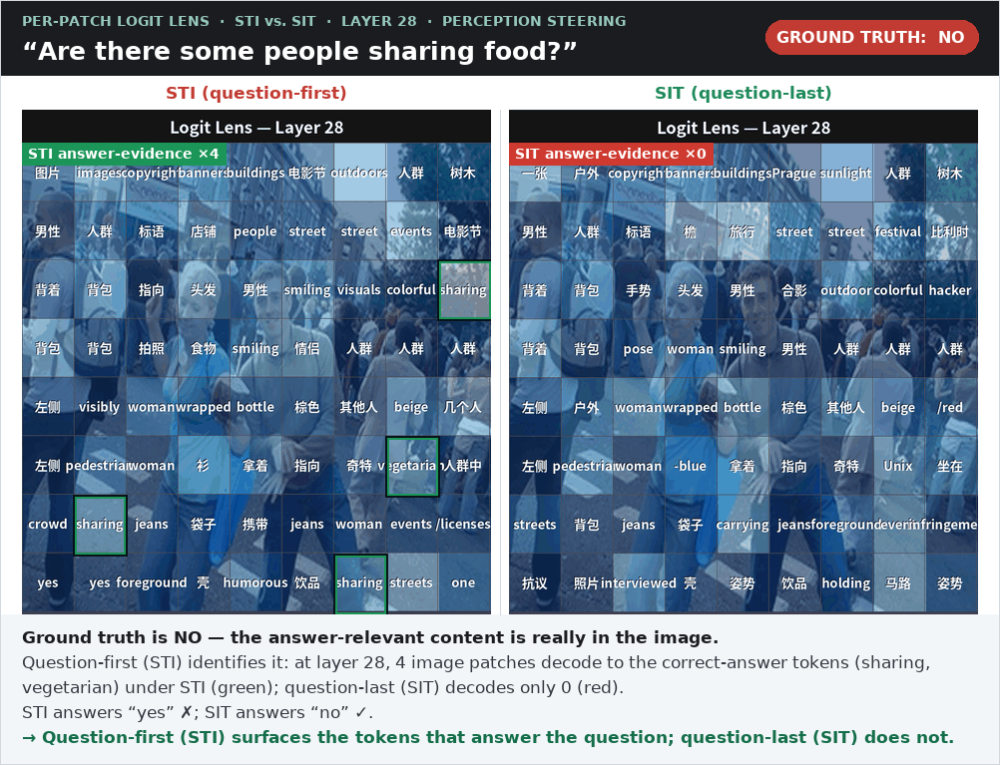
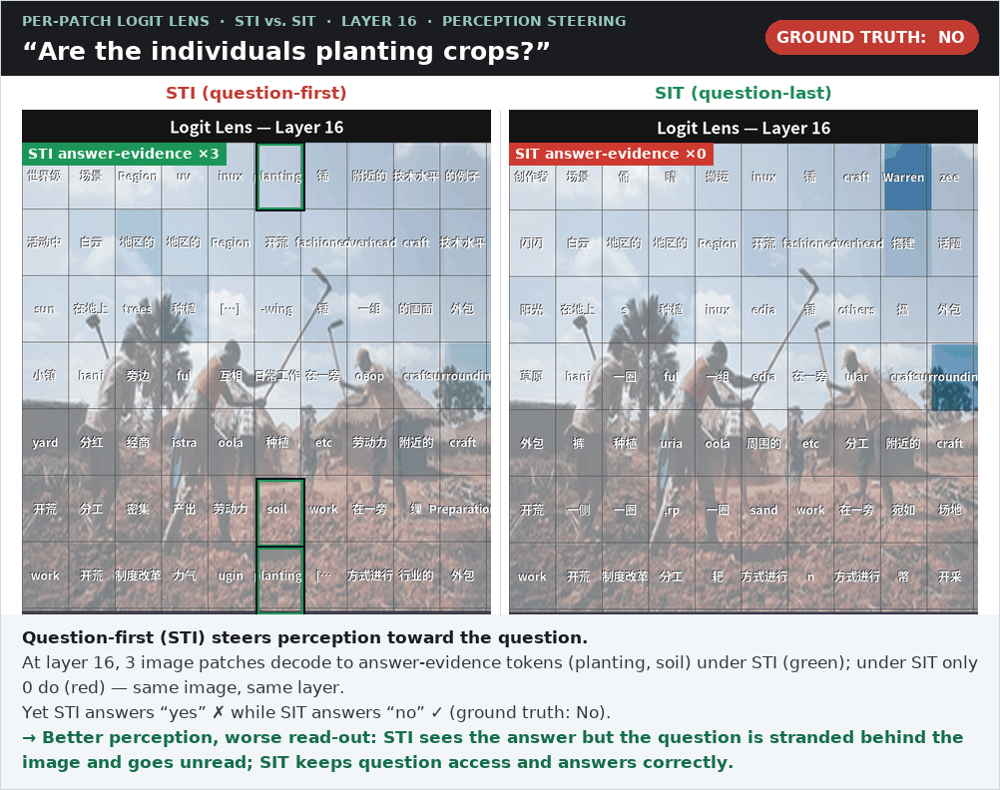

Carnegie Mellon University · Interactive Supplement, ECCV 2026 Submission
Abstract
Where should the question go in a vision-language model (VLM) prompt: before
the image or after it? Intuition says before: knowing what is asked should tell
the model where to look. Yet across visual question answering benchmarks,
question-first prompting consistently underperforms the image-first ordering
recommended for frontier VLMs, a phenomenon we term the
question-first paradox.
A vision-language model reads system, image, and question tokens as one
sequence and answers from the final position. We show that where the
question is placed changes the answer. Placing the question before
the image (question-first, STI) makes the model commit early
to an image-anchored, often wrong answer, even though its intermediate
representations perceive the scene correctly. Placing the question after
the image (question-last, SIT) recovers the correct answer.
Re-presenting the image and question after the image (image echoing,
SITIT) resolves the paradox with no training and gives the
best accuracy across four benchmarks and two model families. This page
summarizes the primary results and lets you watch the answer form
layer by layer with a per-layer logit lens.
1 The Question-First Paradox
A prompt is three sections in token order: the System
message, the Image (many visual tokens), and the
Task/question. Reordering these sections, with content held
fixed, changes what the decoder answers. We report five orderings.
STI
System · Task · Image
question-first — the paradox
SIT
System · Image · Task
question-last — the baseline
STIT
System · Task · Image · Task
question echo (ours)
SITIT
System · Image · Task · Image · Task
image echo (ours) — best
SITITrev
System · Image · Task · Ī · Task
image echo, 2nd copy reversed
Table 1: The five prompt orderings reported
here. Ī denotes the reversed second image copy.
2 Primary Results
Group accuracy on NaturalBench and Winoground; answer accuracy on POPE and
RF20. Question-first (STI, in red)
is the weakest ordering on the compositional benchmarks; image echoing
(SITIT / SITITrev) is the strongest
(best per row in green). Reversing the second image
copy (SITITrev) retains almost all of the gain,
showing the effect comes from a second look, not from copying tokens.
2.1 Qwen3-VL-8B
Benchmark
metric
STI
SIT
STIT
SITIT
SITITrev
NaturalBench
group acc.
0.270
0.350
0.350
0.374
0.374
Winoground
group acc.
0.223
0.318
0.375
0.403
0.410
POPE
acc.
0.870
0.891
0.884
0.889
0.889
RF20
acc.
0.713
0.796
0.793
0.807
0.794
Table 2: Qwen3-VL-8B. STI trails SIT by
8–10 points on NaturalBench and Winoground with identical content; echoing
recovers and exceeds the baseline.
2.2 Gemma-3-27B
Benchmark
metric
STI
SIT
STIT
SITIT
SITITrev
NaturalBench
group acc.
0.232
0.226
0.253
0.255
0.252
Winoground
group acc.
0.212
0.207
0.253
0.318
0.297
POPE
acc.
0.840
0.845
0.838
0.834
0.835
RF20
acc.
0.679
0.694
0.709
0.702
0.696
Table 3: Gemma-3-27B (4-bit, single GPU).
The ordering effect and the echoing fix reproduce in a second model family.
3 Perception Steering: STI Sees the Answer, SIT Does Not
Projecting each image patch's hidden state through the output embedding
decodes it to a vocabulary token; overlaying that token on the patch shows
what the model sees. We choose clear, low-token NaturalBench
yes/no cases rendered at low resolution, so a few large patches each carry a
legible decoded word. In every case below, question-first
(STI) steers perception to the question: every patch that decodes
an answer-evidence token — the action and related objects that help
settle the question, not just the question's own words — is boxed in
green, while question-last (SIT), where
the question comes after the image and cannot steer, boxes far fewer in
red.
STI correctly identifies the tokens needed to answer, yet still answers
wrong; SIT identifies fewer, yet answers right. Perception and read-out
come apart. Press Play under a screenshot to expand the two per-layer
animations for that same image side by side: each frame decodes one layer, and the
bottom row is what the generated answer decodes to at that depth. Under
SIT (question-last) the correct answer emerges and holds; under
STI (question-first) a wrong, image-anchored answer locks in
early.
“Is the dog shaking off water?”
ground truth: No

Figure 3: Per-patch logit lens at layer 32 for “Is the dog shaking off water?” (ground truth No). Question-first (STI, left) steers perception: every image patch that decodes an answer-evidence token — the action and related objects that settle the question — is boxed in green; question-last (SIT, right) decodes far fewer (red) — same image, same layer. Yet STI answers “yes” ✗ while SIT answers “no” ✓: better perception, worse read-out. Press play to watch both resolve layer by layer.
“Is the main action about catching a ball?”
ground truth: Yes

Figure 4: Per-patch logit lens at layer 24 for “Is the main action about catching a ball?” (ground truth Yes). Question-first (STI, left) steers perception: every image patch that decodes an answer-evidence token — the action and related objects that settle the question — is boxed in green; question-last (SIT, right) decodes far fewer (red) — same image, same layer. Yet STI answers “no” ✗ while SIT answers “yes” ✓: better perception, worse read-out. Press play to watch both resolve layer by layer.
“Is the adult in the image chasing a child?”
ground truth: Yes

Figure 5: Per-patch logit lens at layer 32 for “Is the adult in the image chasing a child?” (ground truth Yes). Question-first (STI, left) steers perception: every image patch that decodes an answer-evidence token — the action and related objects that settle the question — is boxed in green; question-last (SIT, right) decodes far fewer (red) — same image, same layer. Yet STI answers “no” ✗ while SIT answers “yes” ✓: better perception, worse read-out. Press play to watch both resolve layer by layer.
“Are there several people sitting on a bench?”
ground truth: No

Figure 6: Per-patch logit lens at layer 30 for “Are there several people sitting on a bench?” (ground truth No). Question-first (STI, left) steers perception: every image patch that decodes an answer-evidence token — the action and related objects that settle the question — is boxed in green; question-last (SIT, right) decodes far fewer (red) — same image, same layer. Yet STI answers “yes” ✗ while SIT answers “no” ✓: better perception, worse read-out. Press play to watch both resolve layer by layer.
“Are there multiple spectators present?”
ground truth: No

Figure 7: Per-patch logit lens at layer 26 for “Are there multiple spectators present?” (ground truth No). Question-first (STI, left) steers perception: every image patch that decodes an answer-evidence token — the action and related objects that settle the question — is boxed in green; question-last (SIT, right) decodes far fewer (red) — same image, same layer. Yet STI answers “yes” ✗ while SIT answers “no” ✓: better perception, worse read-out. Press play to watch both resolve layer by layer.
“Is the person performing a trick on inline skates?”
ground truth: No

Figure 8: Per-patch logit lens at layer 34 for “Is the person performing a trick on inline skates?” (ground truth No). Question-first (STI, left) steers perception: every image patch that decodes an answer-evidence token — the action and related objects that settle the question — is boxed in green; question-last (SIT, right) decodes far fewer (red) — same image, same layer. Yet STI answers “yes” ✗ while SIT answers “no” ✓: better perception, worse read-out. Press play to watch both resolve layer by layer.
“Are there some people sharing food?”
ground truth: No

Figure 9: Per-patch logit lens at layer 28 for “Are there some people sharing food?” (ground truth No). Question-first (STI, left) steers perception: every image patch that decodes an answer-evidence token — the action and related objects that settle the question — is boxed in green; question-last (SIT, right) decodes far fewer (red) — same image, same layer. Yet STI answers “yes” ✗ while SIT answers “no” ✓: better perception, worse read-out. Press play to watch both resolve layer by layer.
“Are the individuals planting crops?”
ground truth: No

Figure 10: Per-patch logit lens at layer 16 for “Are the individuals planting crops?” (ground truth No). Question-first (STI, left) steers perception: every image patch that decodes an answer-evidence token — the action and related objects that settle the question — is boxed in green; question-last (SIT, right) decodes far fewer (red) — same image, same layer. Yet STI answers “yes” ✗ while SIT answers “no” ✓: better perception, worse read-out. Press play to watch both resolve layer by layer.
Re-presenting the (image, question) after the image (SITIT)
gives the decoder a second, adjacent look and flips the same cases from wrong to
right, with no training. Press Play to compare STI (still wrong)
vs. SITIT (fixed) for each image.
“Is the dog shaking off water?”
ground truth: No
STI (question-first). still wrong;
answers “yes” ✗
(ground truth: No).SITIT (image echo). second look fixes it;
answers “no” ✓
(ground truth: No).
“Is the main action about catching a ball?”
ground truth: Yes
STI (question-first). still wrong;
answers “no” ✗
(ground truth: Yes).SITIT (image echo). second look fixes it;
answers “no” ✗
(ground truth: Yes).
“Is the adult in the image chasing a child?”
ground truth: Yes
STI (question-first). still wrong;
answers “no” ✗
(ground truth: Yes).SITIT (image echo). second look fixes it;
answers “yes” ✓
(ground truth: Yes).
“Are there several people sitting on a bench?”
ground truth: No
STI (question-first). still wrong;
answers “yes” ✗
(ground truth: No).SITIT (image echo). second look fixes it;
answers “no” ✓
(ground truth: No).
“Are there multiple spectators present?”
ground truth: No
STI (question-first). still wrong;
answers “yes” ✗
(ground truth: No).SITIT (image echo). second look fixes it;
answers “no” ✓
(ground truth: No).
“Is the person performing a trick on inline skates?”
ground truth: No
STI (question-first). still wrong;
answers “yes” ✗
(ground truth: No).SITIT (image echo). second look fixes it;
answers “no” ✓
(ground truth: No).
“Are there some people sharing food?”
ground truth: No
STI (question-first). still wrong;
answers “yes” ✗
(ground truth: No).SITIT (image echo). second look fixes it;
answers “no” ✓
(ground truth: No).
“Are the individuals planting crops?”
ground truth: No
STI (question-first). still wrong;
answers “yes” ✗
(ground truth: No).SITIT (image echo). second look fixes it;
answers “no” ✓
(ground truth: No).
5 Repository Guide
This supplement ships the analysis code, the interactive viewer, and the
per-run result JSONs for the primary orderings; model weights and raw image
datasets are external. Each benchmark runner takes an --order flag
and writes <dataset>/results/<model>__<order>__results.json,
the exact files that populate the tables above. The order-aware prompt is built
once in model_manager.py and shared across models, so a single code
path produces STI, SIT, STIT, SITIT, and SITIT_rev. The per-layer animations on
this page are rendered by the logit-lens overlay code from the same runs.
Table 4: Where each primary result comes from.
Run e.g. python naturalbench_eval.py --order STI; launch the full
viewer with streamlit run logit_lens_app.py. See
README.md for the complete code→paper map and setup.
Each animation is a per-layer logit lens on Qwen3-VL-8B: the
image is shown at low resolution (few visual tokens) and each frame decodes one
transformer layer — the heatmap is what each image patch decodes to and the
token grid is what every token, including the generated answer, decodes to.
Examples are NaturalBench yes/no pairs chosen for a clear, unambiguous answer.
This is a static supplement; the code, interactive viewer, and full result files
accompany it in the repository.